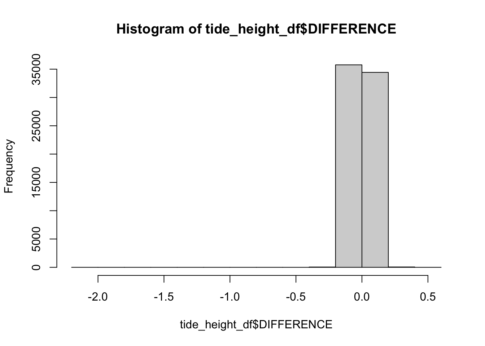

── Attaching core tidyverse packages ──────────────────────── tidyverse 2.0.0 ──
✔ dplyr 1.1.4 ✔ readr 2.1.5
✔ forcats 1.0.0 ✔ stringr 1.5.1
✔ ggplot2 3.5.1 ✔ tibble 3.2.1
✔ lubridate 1.9.3 ✔ tidyr 1.3.1
✔ purrr 1.0.2
── Conflicts ────────────────────────────────────────── tidyverse_conflicts() ──
✖ dplyr::filter() masks stats::filter()
✖ dplyr::lag() masks stats::lag()
ℹ Use the conflicted package (<http://conflicted.r-lib.org/>) to force all conflicts to become errors
Code
library(patchwork)library(svglite)library(scales)
Attaching package: 'scales'
The following object is masked from 'package:purrr':
discard
The following object is masked from 'package:readr':
col_factor
Code
library(treemapify)
2 Preliminary input data
All data from Port Aransas. Counts by hour. Remove data before January 1 2008, as it was newly deployed and has some inconsistencies. Also using lubridate to convert to R-friendly date/time formats.
Time zone is UTC and units of carbon are pg C per cell.
Subset so dataset includes “2008-01-01” to “2017-08-24”.
Export taxa names for manual curation
Export for manual curation
Code
# tax_export <- counts %>% # pivot_longer(cols = -c(DAY), names_to = "CELL_ID", values_to = "COUNT") %>% #Add in time here when we have it.# select(CELL_ID) %>% distinct()
Metadata information compiled by Siddarth Seshampally.
3.1 PTAT2 data
Siddarth
Code
folder_path <-"/Users/skhu/Desktop/Projects/GoM-IFCB-PortAransas/input-data/PTAT2/Standard-Meterological-Data/"file_list <-list.files(folder_path, pattern ="*.txt", full.names =TRUE)# Print the list of files to ensure they are correctly detectedprint(file_list)
[1] "/Users/skhu/Desktop/Projects/GoM-IFCB-PortAransas/input-data/PTAT2/Standard-Meterological-Data//Standard Meteorological Data 2008.txt"
[2] "/Users/skhu/Desktop/Projects/GoM-IFCB-PortAransas/input-data/PTAT2/Standard-Meterological-Data//Standard Meteorological Data 2009.txt"
[3] "/Users/skhu/Desktop/Projects/GoM-IFCB-PortAransas/input-data/PTAT2/Standard-Meterological-Data//Standard Meteorological Data 2010.txt"
[4] "/Users/skhu/Desktop/Projects/GoM-IFCB-PortAransas/input-data/PTAT2/Standard-Meterological-Data//Standard Meteorological Data 2011.txt"
[5] "/Users/skhu/Desktop/Projects/GoM-IFCB-PortAransas/input-data/PTAT2/Standard-Meterological-Data//Standard Meteorological Data 2012.txt"
[6] "/Users/skhu/Desktop/Projects/GoM-IFCB-PortAransas/input-data/PTAT2/Standard-Meterological-Data//Standard Meteorological Data 2013.txt"
[7] "/Users/skhu/Desktop/Projects/GoM-IFCB-PortAransas/input-data/PTAT2/Standard-Meterological-Data//Standard Meteorological Data 2014.txt"
[8] "/Users/skhu/Desktop/Projects/GoM-IFCB-PortAransas/input-data/PTAT2/Standard-Meterological-Data//Standard Meteorological Data 2015.txt"
[9] "/Users/skhu/Desktop/Projects/GoM-IFCB-PortAransas/input-data/PTAT2/Standard-Meterological-Data//Standard Meteorological Data 2016.txt"
[10] "/Users/skhu/Desktop/Projects/GoM-IFCB-PortAransas/input-data/PTAT2/Standard-Meterological-Data//Standard Meteorological Data 2017.txt"
Function to load and format input data
Code
load_and_preprocess <-function(file_path) {# Read the file, skipping the first two header lines data <-read_table(file_path, skip =2, col_names =FALSE)# Assign proper column namescolnames(data) <-c("YY", "MM", "DD", "hh", "mm", "WDIR", "WSPD", "GST", "WVHT", "DPD", "APD", "MWD", "PRES", "ATMP", "WTMP", "DEWP", "VIS", "TIDE")# Combine date and time columns into a datetime column using lubridate data <- data %>%mutate(YY =as.integer(YY),MM =as.integer(MM),DD =as.integer(DD),hh =as.integer(hh),mm =as.integer(mm),datetime =make_datetime(YY, MM, DD, hh, mm) # Ensure hourly accuracy )return(data)}
Code
# Load and merge all data filesall_data <- file_list %>%lapply(load_and_preprocess) %>%bind_rows()
all_data <- all_data %>%unite(day, YY, MM, DD, sep ="-", remove =FALSE) %>%mutate(year =format(datetime, "%Y"))# Group by year and calculate averagesyearly_data <- all_data %>%group_by(year) %>%summarize(avg_ATMP =mean(as.numeric(ATMP), na.rm =TRUE),avg_WTMP =mean(as.numeric(WTMP), na.rm =TRUE) )# Convert year to a numeric format for plottingyearly_data$year <-as.numeric(yearly_data$year)# Check the aggregated dataprint(head(yearly_data))
# Create a full sequence of yearsfull_years <-data.frame(year =2008:2017)# Merge the full sequence with the aggregated datayearly_data <- full_years %>%left_join(yearly_data, by ="year")# Check the updated yearly dataprint(yearly_data)
combined_biol_metadata <- all_data %>%select(day, YY, MM, DD, hh, mm, WDIR, WSPD, MWD, PRES, ATMP, WTMP, TIDE) %>%mutate(DAY =ymd(day),MONTH =month(DAY),HOUR =hour(hh)) %>%right_join(combined_gom_long_season, by =join_by(DAY, MONTH, HOUR))
Warning: There was 1 warning in `mutate()`.
ℹ In argument: `HOUR = hour(hh)`.
Caused by warning:
! tz(): Don't know how to compute timezone for object of class integer; returning "UTC".
Warning in right_join(., combined_gom_long_season, by = join_by(DAY, MONTH, : Detected an unexpected many-to-many relationship between `x` and `y`.
ℹ Row 1 of `x` matches multiple rows in `y`.
ℹ Row 1 of `y` matches multiple rows in `x`.
ℹ If a many-to-many relationship is expected, set `relationship =
"many-to-many"` to silence this warning.
WDIR - Wind direction (the direction the wind is coming from in degrees clockwise from true N) during the same period used for WSPD. See Wind Averaging Methods
WSPD - Wind speed (m/s) averaged over an eight-minute period for buoys and a two-minute period for land stations. Reported Hourly. See Wind Averaging Methods.
GST - Peak 5 or 8 second gust speed (m/s) measured during the eight-minute or two-minute period. The 5 or 8 second period can be determined by payload, See the Sensor Reporting, Sampling, and Accuracy section.
WVHT - Significant wave height (meters) is calculated as the average of the highest one-third of all of the wave heights during the 20-minute sampling period. See the Wave Measurements section.
DPD - Dominant wave period (seconds) is the period with the maximum wave energy. See the Wave Measurements section.
ADP - Average wave period (seconds) of all waves during the 20-minute period. See the Wave Measurements section.
MWD - The direction from which the waves at the dominant period (DPD) are coming. The units are degrees from true North, increasing clockwise, with North as 0 (zero) degrees and East as 90 degrees. See the Wave Measurements section.
PRES - Sea level pressure (hPa). For C-MAN sites and Great Lakes buoys, the recorded pressure is reduced to sea level using the method described in NWS Technical Procedures Bulletin 291 (11/14/80). ( labeled BAR in Historical files)
ATMP - Air temperature (Celsius). For sensor heights on buoys, see Hull Descriptions. For sensor heights at C-MAN stations, see C-MAN Sensor Locations
WTMP - Sea surface temperature (Celsius). For buoys the depth is referenced to the hull’s waterline. For fixed platforms it varies with tide, but is referenced to, or near Mean Lower Low Water (MLLW).
DEWP - Dewpoint temperature taken at the same height as the air temperature measurement.
VIS - Station visibility (nautical miles). Note that buoy stations are limited to reports from 0 to 1.6 nmi.
PTDY - Pressure Tendency is the direction (plus or minus) and the amount of pressure change (hPa)for a three hour period ending at the time of observation. (not in Historical files)
TIDE - The water level in feet above or below Mean Lower Low Water (MLLW).
values_byweek <- plot_biotic %>%filter(COURSE_CLASSIFICATION =="Microeukaryote") %>%filter(Supergroup !="Plantae"& Supergroup !="Animalia/Metazoa") %>%select(-START, -END, -DAY_NOYEAR) %>%pivot_longer(cols =-c(DATE, CELL_ID, COURSE_CLASSIFICATION, TYPE, Domain, Supergroup, Phylum, Class, Order, Family, Genus, Species, SEASON), names_to ="VARIABLE", values_to ="VALUE") %>%distinct() %>%# Average the variable PER day for a single Cell ID typegroup_by(VARIABLE, DATE, CELL_ID, SEASON) %>%summarise(MEAN_bycell_day =mean(VALUE)) %>%ungroup() %>%# Sum total cells for a single daygroup_by(DATE, SEASON, VARIABLE) %>%summarise(SUM_byday =sum(MEAN_bycell_day)) %>%ungroup() %>%# Add a column to specify the WEEK - have week start on Mondaysmutate(WEEK =cut(DATE, "week", start.on.monday =TRUE),MONTH =month(as_date(DATE)),YEAR =year(as_date(DATE))) %>%# Get mean, min, and max for each weekgroup_by(WEEK, SEASON, YEAR, VARIABLE) %>%summarise(MEAN_WEEK =mean(SUM_byday),MAX_WEEK =max(SUM_byday),MIN_WEEK =min(SUM_byday))
`summarise()` has grouped output by 'VARIABLE', 'DATE', 'CELL_ID'. You can
override using the `.groups` argument.
`summarise()` has grouped output by 'DATE', 'SEASON'. You can override using
the `.groups` argument.
`summarise()` has grouped output by 'WEEK', 'SEASON', 'YEAR'. You can override
using the `.groups` argument.
This is a good supplementary figure or summary figure for a poster explaining the IFCB.
Plot biotic - one year
Code
head(plot_biotic)
# A tibble: 6 × 19
DATE CELL_ID COURSE_CLASSIFICATION TYPE Domain Supergroup Phylum Class
<date> <chr> <chr> <chr> <chr> <chr> <chr> <chr>
1 2008-01-01 Akashiwo Microeukaryote Cell "Euka… "Alveolat… "Dino… "Din…
2 2008-01-01 Anabaena Cyanobacteria Cell "Bact… "Cyanobac… "Cyan… "Cya…
3 2008-01-01 Apedine… Microeukaryote Cell "Euka… "Strameno… "Ochr… "Dic…
4 2008-01-01 Asterio… Microeukaryote Cell "Euka… "Strameno… "Ochr… "Bac…
5 2008-01-01 Beads IFCB excess Non-… "" "" "" ""
6 2008-01-01 Centric Microeukaryote Cell… "Euka… "Strameno… "Ochr… "Bac…
# ℹ 11 more variables: Order <chr>, Family <chr>, Genus <chr>, Species <chr>,
# SEASON <chr>, CARBON <dbl>, COUNT <dbl>, pgC_ml <dbl>, START <date>,
# END <date>, DAY_NOYEAR <date>
Code
biotic_1yr <- plot_biotic %>%# Group by cell ID to get mean for a single daygroup_by(DAY_NOYEAR, DATE, CELL_ID, SEASON, COURSE_CLASSIFICATION) %>%summarise(PER_DAY_CELL =mean(COUNT),PER_DAY_CARBON =mean(CARBON),PER_DAY_CARBON_ml =mean(pgC_ml)) %>%ungroup() %>%# NOW sum up the different cell types that contribute to the course classification per daygroup_by(DAY_NOYEAR, DATE, SEASON, COURSE_CLASSIFICATION) %>%summarise(PER_DAY_COURSE_CELL =sum(PER_DAY_CELL),PER_DAY_COURSE_CARBON =sum(PER_DAY_CARBON),PER_DAY_COURSE_CARBONml =sum(PER_DAY_CARBON_ml)) %>%ungroup() %>%# Now average by yeargroup_by(DAY_NOYEAR, COURSE_CLASSIFICATION, SEASON) %>%summarise(MEAN_COUNTS_1yr =mean(PER_DAY_COURSE_CELL),MEAN_CARBON_1yr =mean(PER_DAY_COURSE_CARBON),MEAN_CARBONml_1yr =mean(PER_DAY_COURSE_CARBONml))
`summarise()` has grouped output by 'DAY_NOYEAR', 'DATE', 'CELL_ID', 'SEASON'.
You can override using the `.groups` argument.
`summarise()` has grouped output by 'DAY_NOYEAR', 'DATE', 'SEASON'. You can
override using the `.groups` argument.
`summarise()` has grouped output by 'DAY_NOYEAR', 'COURSE_CLASSIFICATION'. You
can override using the `.groups` argument.
Anglès, Sílvia, Antoni Jordi, Darren W. Henrichs, and Lisa Campbell. 2019. “Influence of Coastal Upwelling and River Discharge on the Phytoplankton Community Composition in the Northwestern Gulf of Mexico.” Progress in Oceanography 173 (April): 26–36. https://doi.org/10.1016/j.pocean.2019.02.001.
Henrichs, Darren W., Heidi M. Sosik, Robert J. Olson, and Lisa Campbell. 2011. “Phylogenetic Analysis of Brachidinium Capitatum (Dinophyceae) from the Gulf of Mexico Indicates Membership in the Kareniaceae(1): Phylogeny of b. Capitatum.” Journal of Phycology 47 (2): 366–74. https://doi.org/10.1111/j.1529-8817.2011.00960.x.
Review materials and methods of these papers to look address a few things.
How is tidal cycle included? What parameters can we use to account for tidal cycle/exchange in our dataset?
Is there a way to get salinity?
5.1 All daily
Look at by hour and season for different supergroups.
Code
combined_biol_metadata |>filter(COURSE_CLASSIFICATION =="Microeukaryote") %>%filter(Phylum !="Cnidaria") %>%# Remove any zeroesfilter(COUNT >0|is.na(COUNT)) %>%# Get average for a given hour in the same month and season for an individual day.group_by(HOUR, SEASON, Supergroup, Phylum) %>%summarise(MEAN_COUNT_DAILY =mean(COUNT),MAX_COUNT_DAILY =max(COUNT),MIN_COUNT_DAILY =min(COUNT)) %>%ggplot(aes(x = (HOUR), y = MEAN_COUNT_DAILY, color = SEASON)) +geom_path(aes(group = Phylum)) +geom_point(shape =19) +facet_grid(rows =vars(Supergroup), cols =vars(SEASON), scales ="free") +theme_classic() +scale_color_manual(values =c("#cc5500","#bccbae","#ffbf00","#5d4e62")) +scale_y_log10() +labs(x ="", y =bquote("log cell"~ml^-1)) +theme(legend.position ="bottom", legend.title =element_blank(),axis.text.x =element_text(color ="black", face ="bold", size =10),axis.title =element_text(color ="black", face ="bold", size =11),axis.text.y =element_text(color ="black", face ="bold", size =10),panel.grid.major =element_line(color ="#d9d9d9", linewidth =0.3))
`summarise()` has grouped output by 'HOUR', 'SEASON', 'Supergroup'. You can
override using the `.groups` argument.
Each line represents a phylum, so there are some withe more variability than others. We also know that cell types are not equally represented across the supergroups in the IFCB data, therefore, we need to focus on the stramenopiles and alveolata vs. other supergroups.
Code
alv_stram <-c("Stramenopiles", "Alveolata")# counts_long_wtax_wseasoncombined_biol_metadata |>filter(COURSE_CLASSIFICATION =="Microeukaryote") %>%filter(Phylum !="Cnidaria") %>%filter(!(Supergroup %in% alv_stram)) %>%# Remove any zeroesfilter(COUNT >0|is.na(COUNT)) %>%# Get average for a given hour in the same month and season for an individual day.group_by(HOUR, SEASON, Supergroup, Phylum, CELL_ID) %>%summarise(MEAN_COUNT_DAILY =mean(COUNT),MAX_COUNT_DAILY =max(COUNT),MIN_COUNT_DAILY =min(COUNT)) %>%ggplot(aes(x = (HOUR), y = MEAN_COUNT_DAILY, color = SEASON)) +geom_path(aes(group = CELL_ID)) +geom_point(shape =19) +facet_grid(rows =vars(Supergroup), cols =vars(SEASON), scales ="free") +theme_classic() +scale_color_manual(values =c("#cc5500","#bccbae","#ffbf00","#5d4e62")) +scale_y_log10() +labs(x ="", y =bquote("log cell"~ml^-1)) +theme(legend.position ="bottom", legend.title =element_blank(),axis.text.x =element_text(color ="black", face ="bold", size =10),axis.title =element_text(color ="black", face ="bold", size =11),axis.text.y =element_text(color ="black", face ="bold", size =10),panel.grid.major =element_line(color ="#d9d9d9", linewidth =0.3))
`summarise()` has grouped output by 'HOUR', 'SEASON', 'Supergroup', 'Phylum'.
You can override using the `.groups` argument.

6 Focus on Alveolata, Stramenopiles, & Haptophytes
# ocean_data_files <- list.files(path = "input-data/TABS_D/", pattern = "Ocean Data ", full.names = TRUE)# # # Make sure it works# ocean_data_files# # The full.names = TRUE means that it will output the whole path. This is what we want!
Let’s test out how to import one of these files so we can write an effective function below.
Code
# test <- read.table(# "input-data/TABS_D/Ocean Data 2010.txt", #Use read.table, because columns were separated by either 1 or more spaces. # comment.char = "", # Tell R that the "#" in line 1 and 2 needs to be read, instead of ignored.# skip = 1, #Skip the first line, because there are 2 "headers"# header = TRUE # make sure the first column is read in as a column header.# )# head(test)# # ?read.table# # # We will want to fix the column headers below, so let's try it. # # YY MM DD hh mm DEPTH OTMP COND SAL O2% O2PPM CLCON TURB PH EH# # test_headers <- test |> # select(YEAR = X.yr,# MONTH = mo,# DAY = dy,# HOUR = hr,# MINUTE = mn,# DEPTH_m = m,# TEMP_degC = degC,# COND_mS_cm = mS.cm,# SAL_psu = psu,# O2_perc = X.,# O2_PPM = ppm,# Cl_ug_l = ug.l,# TURB_FTU = FTU,# pH = X..1,# EH = mv)# ## This is where you will want to review the data you collected. And remember R is really basic when it comes to reading in spaces and special characters. So we should make more meaningful column headers.# head(test_headers)
#YY MM DD hh mm DEPTH OTMP COND SAL O2% O2PPM CLCON TURB PH EH
#yr mo dy hr mn m degC mS/cm psu % ppm ug/l FTU - mv
2010 01 01 00 00 2.0 14.70 999.00 99.00 999.0 99.00 999.00 99 99.00 99.00
2010 01 01 00 30 2.0 14.70 999.00 99.00 999.0 99.00 999.00 99 99.00 99.00
Columns should be: YY MM DD hh mm DEPTH OTMP COND SAL O2% O2PPM CLCON TURB PH EH
We can test out and build each line of the function using more examples with ocean_data_files[1]
Code
# i <- ocean_data_files[1]# # i# # Isolate each file name, so we can get the year information.# strip_name <- unlist(strsplit(i, " "))# year <- str_remove(strip_name[3], ".txt")# year
Write a function to import each file, modify it, and anneal it to itself.
Code
# rm(in_data); rm(new_table)# # The i will be our variable in the function. This "for" statement will reach each item in the "ocean_data_files" file list.# for (i in ocean_data_files){# in_data <- read.table(i, # comment.char = "", skip = 1, header = TRUE)# # Get year information.# strip_name <- unlist(strsplit(i, " "))# year <- str_remove(strip_name[3], ".txt")# # Add as a column# in_data$YEAR <- year# # Write an if else statement to combine all data.# if (!exists("new_table")){# new_table <- in_data# } else {# new_table <- rbind(new_table, in_data)# }# rm(in_data)# }# # # Check out the new table# head(new_table)# # # All years?# unique(new_table$YEAR)
Fix column headers now. Note that for this data, YEAR was listed twice. We can clean it up now. But it is an example of how to parse file names for dataframe information.
---title: "ifcb-port aransas"format: html: code-fold: show code-tools: true code-copy: true toc: true toc-location: left number-sections: true number-depth: 2editor: visual---# Set-up```{r, warning=FALSE}# | warning: false# | message: falselibrary(tidyverse)library(patchwork)library(svglite)library(scales)library(treemapify)```# Preliminary input dataAll data from Port Aransas. Counts by hour. Remove data before January 1 2008, as it was newly deployed and has some inconsistencies. Also using lubridate to convert to R-friendly date/time formats.Time zone is UTC and units of carbon are pg C per cell. ```{r}counts <-read.csv("input-data/counts_hourly_Hu.csv") |># Use lubridate package to assign "date" format.mutate(DAY =ymd_hms(X)) %>%mutate(DATE =date(DAY),MONTH =month(DAY),HOUR =hour(DAY)) %>%select(DAY, DATE, MONTH, HOUR, everything(), -X) %>%filter(as_date(DAY) >=as_date("2008-01-01") &as_date(DAY) <=as_date("2017-08-24"))# glimpse(counts)range(counts$DAY)# head(counts)```Carbon biomass by day. pgC per cell.```{r}carbon <-read.csv("input-data/carbon_hourly.csv") %>%mutate(DAY =ymd_hms(X)) %>%mutate(DATE =date(DAY),MONTH =month(DAY),HOUR =hour(DAY)) %>%select(DAY, DATE, MONTH, HOUR, everything(), -X) %>%filter(as_date(DAY) >=as_date("2008-01-01") &as_date(DAY) <=as_date("2017-08-24"))# head(carbon)range(carbon$DAY)# glimpse(carbon)```Subset so dataset includes "2008-01-01" to "2017-08-24".### Export taxa names for manual curationExport for manual curation```{r}# tax_export <- counts %>% # pivot_longer(cols = -c(DAY), names_to = "CELL_ID", values_to = "COUNT") %>% #Add in time here when we have it.# select(CELL_ID) %>% distinct()```## Refine input data## Add taxa curated to cell IDs and carbon dataSiddarth contributed to this taxa list.```{r}tax_curated <-read.csv("input-data/tax-list.csv") |>select(CELL_ID:Species) ```Add to cell ID information```{r}counts_long_wtax <- counts %>%pivot_longer(cols =-c(DAY, DATE, MONTH, HOUR), names_to ="CELL_ID", values_to ="COUNT", values_drop_na =TRUE) %>%filter(COUNT >0) %>%left_join(tax_curated)head(counts_long_wtax)# range(counts_long_wtax$COUNT)```Add to carbon data```{r}carbon_long_wtax <- carbon %>%pivot_longer(cols =-c(DAY, DATE, MONTH, HOUR), names_to ="CELL_ID", values_to ="CARBON", values_drop_na =TRUE) %>%filter(CARBON >0) %>%left_join(tax_curated)# head(carbon_long_wtax)# range(carbon_long_wtax$CARBON)```## Combine carbon and cell counts```{r}combined_gom_long <- carbon_long_wtax %>%left_join(counts_long_wtax)```Types of classifications in dataset.```{r}table(combined_gom_long$COURSE_CLASSIFICATION)table(combined_gom_long$TYPE)# glimpse(combined_gom_long)# table(combined_gom_long$COURSE_CLASSIFICATION)```## Add seasonsMake data frames to assign seasonSpring = March 1 - May 31 Summer = June 1 - Aug 31 Fall = Sept 1 - Nov 30 Winter = Dec 1 - Feb (March 1 (-1))Make a new dataframe to just add seasons (manually) to the date. I'm subsetting to 2024 to include leap day years. ```{r}df_season <- counts %>%pivot_longer(cols =-c(DAY, DATE, MONTH, HOUR), names_to ="CELL_ID", values_to ="COUNT") %>%mutate(DATA_GAP =case_when(is.na(COUNT) ~"Missing",TRUE~"Not missing" )) |>mutate(date_tmp =as.Date(format(DAY, '2024-%m-%d')), SEASON =case_when(between(date_tmp, ymd('2024-03-01'), ymd('2024-05-31')) ~"Spring",between(date_tmp, ymd('2024-06-01'), ymd('2024-08-31')) ~"Summer", between(date_tmp, ymd('2024-09-01'), ymd('2024-11-30')) ~"Fall", TRUE~"Winter")) %>%# Winter needs to be "else" because you can't select between.select(DAY, date_tmp, SEASON, DATA_GAP) |>distinct() |>mutate(YEAR =year(DAY),MONTH =month(DAY),DATE =day(DAY),HOUR =hour(DAY)) |>group_by(SEASON) |>mutate(month_start_tmp =case_when( SEASON =="Winter"~max(MONTH),TRUE~min(MONTH)),year_start_tmp =case_when(SEASON =="Winter"~ YEAR -1,TRUE~ YEAR), ) |>mutate(month_end_tmp =case_when( SEASON =="Winter"~2,TRUE~max(MONTH))) |>group_by(SEASON, MONTH) |>mutate(day_start_tmp =min(day(DAY)),day_end_tmp =case_when( (SEASON =="Winter"&leap_year(YEAR) ==TRUE) ~29, (SEASON =="Winter"&leap_year(YEAR) ==FALSE) ~28, (SEASON =="Summer"| SEASON =="Spring") ~31, SEASON =="Fall"~30 )) |>ungroup() |>unite("start", year_start_tmp, month_start_tmp, day_start_tmp, sep ="-", remove =FALSE) |>unite("end", YEAR, month_end_tmp, day_end_tmp, sep ="-", remove =FALSE) |>mutate(START =ymd(start),END =ymd(end),START_noy =mdy(paste(month(START), day(START), "2024", sep ="-")),END_noy =mdy(paste(month(END), day(END), "2024", sep ="-"))) |>select(DAY, DATE, MONTH, YEAR, HOUR, SEASON, START, END, START_noy, END_noy) |>distinct()# head(df_season)# View(df_season |> select(SEASON, START, END) |> distinct())df_oneyear <- df_season |>mutate(DATE =mdy(paste(month(DAY), day(DAY), "2024", sep ="-"))) |>select(SEASON, START_noy, END_noy, DATE) |># filter(!(SEASON == "Winter" & (month(START_noy) == 12))) |> distinct()# head(df_oneyear)```Test seasonal plot```{r, fig.height=4, fig.width=6}# Plot multiple yearsggplot(df_season, aes(x = as_date(DAY))) + geom_rect(data = (filter(df_season, SEASON == "Fall")), alpha = 0.2, fill = "#cc5500", aes(xmin = START, xmax = END, ymin = 0, ymax = 10000)) + geom_rect(data = (filter(df_season, SEASON == "Spring")), alpha = 0.2, fill = "#bccbae", aes(xmin = START, xmax = END, ymin = 0, ymax = 10000)) + geom_rect(data = (filter(df_season, SEASON == "Summer")), alpha = 0.2, fill = "#ffbf00", aes(xmin = START, xmax = END, ymin = 0, ymax = 10000)) + geom_rect(data = (filter(df_season, SEASON == "Winter")), alpha = 0.2, fill = "#5d4e62", aes(xmin = START, xmax = END, ymin = 0, ymax = 10000))# Plot one yearggplot(df_oneyear, aes(x = as_date(DATE))) + geom_rect(data = (filter(df_oneyear, SEASON == "Fall")), alpha = 0.2, fill = "#cc5500", aes(xmin = START_noy, xmax = END_noy, ymin = 0, ymax = 10000)) + geom_rect(data = (filter(df_oneyear, SEASON == "Spring")), alpha = 0.2, fill = "#bccbae", aes(xmin = START_noy, xmax = END_noy, ymin = 0, ymax = 10000)) + geom_rect(data = (filter(df_oneyear, SEASON == "Summer")), alpha = 0.2, fill = "#ffbf00", aes(xmin = START_noy, xmax = END_noy, ymin = 0, ymax = 10000)) + geom_rect(data = (filter(df_oneyear, SEASON == "Winter")), alpha = 0.2, fill = "#5d4e62", aes(xmin = as_date("2024-01-01"), xmax = END_noy, ymin = 0, ymax = 10000)) + geom_rect(data = (filter(df_oneyear, SEASON == "Winter")), alpha = 0.2, fill = "#5d4e62", aes(xmin = START_noy, xmax = as_date("2024-12-31"), ymin = 0, ymax = 10000))```Combine with existing data frame.```{r}combined_gom_long_season <- combined_gom_long %>%left_join(df_season %>%select(DAY, SEASON, START, END)) %>%mutate(day_noyear =paste(MONTH, day(DAY), "2024", sep ="-")) |>mutate(DAY_NOYEAR =mdy(day_noyear)) |>select(-day_noyear)# unique(df_season$SEASON)# unique(combined_gom_long_season$SEASON)```# Import Gulf metadataMetadata information compiled by Siddarth Seshampally.## PTAT2 data_Siddarth_```{r}folder_path <-"/Users/skhu/Desktop/Projects/GoM-IFCB-PortAransas/input-data/PTAT2/Standard-Meterological-Data/"file_list <-list.files(folder_path, pattern ="*.txt", full.names =TRUE)# Print the list of files to ensure they are correctly detectedprint(file_list)```Function to load and format input data```{r}load_and_preprocess <-function(file_path) {# Read the file, skipping the first two header lines data <-read_table(file_path, skip =2, col_names =FALSE)# Assign proper column namescolnames(data) <-c("YY", "MM", "DD", "hh", "mm", "WDIR", "WSPD", "GST", "WVHT", "DPD", "APD", "MWD", "PRES", "ATMP", "WTMP", "DEWP", "VIS", "TIDE")# Combine date and time columns into a datetime column using lubridate data <- data %>%mutate(YY =as.integer(YY),MM =as.integer(MM),DD =as.integer(DD),hh =as.integer(hh),mm =as.integer(mm),datetime =make_datetime(YY, MM, DD, hh, mm) # Ensure hourly accuracy )return(data)}``````{r}# Load and merge all data filesall_data <- file_list %>%lapply(load_and_preprocess) %>%bind_rows()# Check the combined datasetprint(dim(all_data)) # Print the dimensions of the dataprint(head(all_data)) # View the first few rows# range(all_data$datetime)``````{r}# Extract year for aggregationhead(all_data)all_data <- all_data %>%unite(day, YY, MM, DD, sep ="-", remove =FALSE) %>%mutate(year =format(datetime, "%Y"))# Group by year and calculate averagesyearly_data <- all_data %>%group_by(year) %>%summarize(avg_ATMP =mean(as.numeric(ATMP), na.rm =TRUE),avg_WTMP =mean(as.numeric(WTMP), na.rm =TRUE) )# Convert year to a numeric format for plottingyearly_data$year <-as.numeric(yearly_data$year)# Check the aggregated dataprint(head(yearly_data))# Create a full sequence of yearsfull_years <-data.frame(year =2008:2017)# Merge the full sequence with the aggregated datayearly_data <- full_years %>%left_join(yearly_data, by ="year")# Check the updated yearly dataprint(yearly_data)``````{r}# Plot the yearly averagesggplot(yearly_data, aes(x = year)) +geom_line(aes(y = avg_ATMP, color ="ATMP"), na.rm =TRUE) +geom_line(aes(y = avg_WTMP, color ="WTMP"), na.rm =TRUE) +scale_x_continuous(breaks =2008:2017, # Show all years explicitlylabels =2008:2017 ) +labs(title ="Yearly Average of ATMP and WTMP (2008-2017)",x ="Year",y ="Temperature (°C)",color ="Parameter" ) +theme_minimal() +theme(axis.text.x =element_text(angle =45, hjust =1)) # Rotate x-axis labels if needed```> Siddarth, add in temperature and tidal ## Combine with IFCB data```{r}head(combined_gom_long_season)head(all_data)unique(combined_gom_long_season$SEASON)combined_biol_metadata <- all_data %>%select(day, YY, MM, DD, hh, mm, WDIR, WSPD, MWD, PRES, ATMP, WTMP, TIDE) %>%mutate(DAY =ymd(day),MONTH =month(DAY),HOUR =hour(hh)) %>%right_join(combined_gom_long_season, by =join_by(DAY, MONTH, HOUR))colnames(combined_biol_metadata)unique(combined_biol_metadata$SEASON)head(combined_biol_metadata)```**Standard Meteorological Data:** WDIR - Wind direction (the direction the wind is coming from in degrees clockwise from true N) during the same period used for WSPD. See Wind Averaging MethodsWSPD - Wind speed (m/s) averaged over an eight-minute period for buoys and a two-minute period for land stations. Reported Hourly. See Wind Averaging Methods.GST - Peak 5 or 8 second gust speed (m/s) measured during the eight-minute or two-minute period. The 5 or 8 second period can be determined by payload, See the Sensor Reporting, Sampling, and Accuracy section.WVHT - Significant wave height (meters) is calculated as the average of the highest one-third of all of the wave heights during the 20-minute sampling period. See the Wave Measurements section.DPD - Dominant wave period (seconds) is the period with the maximum wave energy. See the Wave Measurements section.ADP - Average wave period (seconds) of all waves during the 20-minute period. See the Wave Measurements section.MWD - The direction from which the waves at the dominant period (DPD) are coming. The units are degrees from true North, increasing clockwise, with North as 0 (zero) degrees and East as 90 degrees. See the Wave Measurements section.PRES - Sea level pressure (hPa). For C-MAN sites and Great Lakes buoys, the recorded pressure is reduced to sea level using the method described in NWS Technical Procedures Bulletin 291 (11/14/80). ( labeled BAR in Historical files)ATMP - Air temperature (Celsius). For sensor heights on buoys, see Hull Descriptions. For sensor heights at C-MAN stations, see C-MAN Sensor LocationsWTMP - Sea surface temperature (Celsius). For buoys the depth is referenced to the hull's waterline. For fixed platforms it varies with tide, but is referenced to, or near Mean Lower Low Water (MLLW).DEWP - Dewpoint temperature taken at the same height as the air temperature measurement.VIS - Station visibility (nautical miles). Note that buoy stations are limited to reports from 0 to 1.6 nmi.PTDY - Pressure Tendency is the direction (plus or minus) and the amount of pressure change (hPa)for a three hour period ending at the time of observation. (not in Historical files)TIDE - The water level in feet above or below Mean Lower Low Water (MLLW).```{r}head(combined_biol_metadata)```## Save / import data locally```{r}save(combined_gom_long_season, combined_biol_metadata, df_season, all_data, file ="input-data/data_annotated_wtax_wseason.RData")```# IFCB data overviewMake a bar plot of the course classification types available from the IFCB.```{r, fig.height=4, fig.width=6}head(combined_gom_long_season)combined_gom_long_season |> group_by(COURSE_CLASSIFICATION, TYPE) |> summarise(total_OCCUR = n(), total_counts = sum(COUNT), total_carbon = sum(CARBON)) |> pivot_longer(cols = starts_with("total_")) %>% ggplot(aes(area = value, fill = COURSE_CLASSIFICATION)) + geom_treemap(color = "white") + facet_grid(rows = vars(TYPE), cols = vars(name)) + theme_classic()```> Based on the above, we will focus primarily on the pink color, microeukaryotes, which will include cells and cell type. Repeat with only microeukaryotes```{r, fig.height=4, fig.width=6}combined_gom_long_season |> filter(COURSE_CLASSIFICATION == "Microeukaryote") |> group_by(Supergroup, Phylum) |> summarise(var_sum_count = sum(COUNT), var_sum_carbon = sum(CARBON)) |> pivot_longer(cols = starts_with("var_")) %>% ggplot(aes(x = Supergroup, y = value, fill = Phylum)) + geom_bar(stat = "identity", color = "black") + coord_flip() + theme_classic() + facet_grid(cols = vars(name), scales = "free") + labs(y = "Sum of cell counts", x = "Supergroup")```### Breakdown Alveolata```{r}head(combined_gom_long_season)```## Cells, Carbon, and carbon per cell for specific groups:Carbon units are pgC per cell; Cells are cells per ml. cell * carbon = pgC per ml```{r}head(combined_biol_metadata)plot_biotic <- combined_biol_metadata %>%mutate(pgC_ml = COUNT * CARBON) %>%select(DATE, CELL_ID, COURSE_CLASSIFICATION, TYPE, Domain, Supergroup, Phylum, Class, Order, Family, Genus, Species, SEASON, CARBON, COUNT, pgC_ml, START, END, DAY_NOYEAR)```### Plot biotic - all yearsWe want to add information to the dates for when there are Karenia notifications and a data gap. ```{r}kar_gap <- plot_biotic %>%filter(CELL_ID =="Karenia_brevis") %>%mutate(ADD =case_when( (grepl("Karenia_brevis", CELL_ID) & COUNT >2) ~"Notification")) %>%mutate(WEEK =cut(DATE, "week", start.on.monday =TRUE),YEAR =year(as_date(DATE))) %>%select(WEEK, YEAR, ADD) %>%distinct() %>%drop_na()``````{r}values_byweek <- plot_biotic %>%filter(COURSE_CLASSIFICATION =="Microeukaryote") %>%filter(Supergroup !="Plantae"& Supergroup !="Animalia/Metazoa") %>%select(-START, -END, -DAY_NOYEAR) %>%pivot_longer(cols =-c(DATE, CELL_ID, COURSE_CLASSIFICATION, TYPE, Domain, Supergroup, Phylum, Class, Order, Family, Genus, Species, SEASON), names_to ="VARIABLE", values_to ="VALUE") %>%distinct() %>%# Average the variable PER day for a single Cell ID typegroup_by(VARIABLE, DATE, CELL_ID, SEASON) %>%summarise(MEAN_bycell_day =mean(VALUE)) %>%ungroup() %>%# Sum total cells for a single daygroup_by(DATE, SEASON, VARIABLE) %>%summarise(SUM_byday =sum(MEAN_bycell_day)) %>%ungroup() %>%# Add a column to specify the WEEK - have week start on Mondaysmutate(WEEK =cut(DATE, "week", start.on.monday =TRUE),MONTH =month(as_date(DATE)),YEAR =year(as_date(DATE))) %>%# Get mean, min, and max for each weekgroup_by(WEEK, SEASON, YEAR, VARIABLE) %>%summarise(MEAN_WEEK =mean(SUM_byday),MAX_WEEK =max(SUM_byday),MIN_WEEK =min(SUM_byday)) head(values_byweek)``````{r, fig.height=7, fig.width=30}oneyr_counts <- values_byweek %>% mutate(VARIABLE_LABEL = factor(VARIABLE, levels = c("COUNT", "CARBON", "pgC_ml"), labels = c(bquote("Cells"~ml^-1), bquote("pg Carbon"~cell^-1), bquote("pg Carbon"~ml^-1)))) %>% ggplot(aes(x = as_date(WEEK), y = MEAN_WEEK)) + geom_line(color = "black", alpha = 0.4) + geom_linerange(aes(ymin = MIN_WEEK, ymax = MAX_WEEK, color = SEASON, alpha = 0.5), linewidth = 0.5) + geom_point(shape = 19, size = 2, aes(color = SEASON)) + theme_classic() + facet_grid(rows = vars(VARIABLE_LABEL), scales = "free", labeller = label_parsed, switch = "y") + scale_x_date(date_labels = "%b %y", expand = c(0,0), date_breaks = "3 months", date_minor_breaks = "month") + scale_color_manual(values = c("#cc5500","#bccbae","#ffbf00","#5d4e62")) + scale_y_log10() + labs(x = "IFCB time series", y = "") + theme(legend.position = "bottom", legend.title = element_blank(), strip.text.y = element_text(color = "black", face = "bold", size = 14), strip.background = element_blank(), strip.placement = "outside", axis.text.x = element_text(color = "black", face = "bold", size = 14), axis.title = element_text(color = "black", face = "bold", size = 14), axis.text.y = element_text(color = "black", face = "bold", size = 14), panel.grid.major = element_line(color = "#d9d9d9", linewidth = 0.3)) + geom_point(data = (kar_gap %>% filter(ADD == "Notification")), aes(x = as_date(WEEK), y = 10000), shape = 19, color = "red", alpha = 0.6)# labs(y = bquote("FLP cells " ~ mL^-1), x = "Incubation hours") + oneyr_counts # geom_point(data = (kar_gap %>% filter(ADD == "Notification")), aes(x = as_date(WEEK), y = 10000), shape = 19, color = "red", alpha = 0.6) + # geom_point(data = (kar_gap %>% filter(ADD != "Notification")), aes(x = as_date(WEEK), y = 0), size = 3, alpha = 0.6, shape = 17, color = "#bdbdbd")```> This is a good supplementary figure or summary figure for a poster explaining the IFCB. ### Plot biotic - one year```{r}head(plot_biotic)biotic_1yr <- plot_biotic %>%# Group by cell ID to get mean for a single daygroup_by(DAY_NOYEAR, DATE, CELL_ID, SEASON, COURSE_CLASSIFICATION) %>%summarise(PER_DAY_CELL =mean(COUNT),PER_DAY_CARBON =mean(CARBON),PER_DAY_CARBON_ml =mean(pgC_ml)) %>%ungroup() %>%# NOW sum up the different cell types that contribute to the course classification per daygroup_by(DAY_NOYEAR, DATE, SEASON, COURSE_CLASSIFICATION) %>%summarise(PER_DAY_COURSE_CELL =sum(PER_DAY_CELL),PER_DAY_COURSE_CARBON =sum(PER_DAY_CARBON),PER_DAY_COURSE_CARBONml =sum(PER_DAY_CARBON_ml)) %>%ungroup() %>%# Now average by yeargroup_by(DAY_NOYEAR, COURSE_CLASSIFICATION, SEASON) %>%summarise(MEAN_COUNTS_1yr =mean(PER_DAY_COURSE_CELL),MEAN_CARBON_1yr =mean(PER_DAY_COURSE_CARBON),MEAN_CARBONml_1yr =mean(PER_DAY_COURSE_CARBONml)) head(biotic_1yr)``````{r, fig.height=8, fig.width=9}YMAX <- max(biotic_1yr$MEAN_CARBON_1yr)YMAX <-0# YMAXbiotic_1yr %>% pivot_longer(cols = starts_with("MEAN_")) %>% mutate(VARIABLE_LABEL = factor(name, levels = c("MEAN_COUNTS_1yr", "MEAN_CARBON_1yr", "MEAN_CARBONml_1yr"), labels = c(bquote("Cells"~ml^-1), bquote("pg Carbon"~cell^-1), bquote("pg Carbon"~ml^-1)))) %>% ggplot(aes(x = DAY_NOYEAR, y = value, fill = COURSE_CLASSIFICATION)) + geom_area(position = "stack") + theme_classic() + scale_x_date(date_labels = "%b", expand = c(0,0)) + scale_y_continuous(expand = c(0,0)) + facet_grid(rows = vars(VARIABLE_LABEL), scales = "free", labeller = label_parsed) + labs(x = "", y = "") + scale_fill_manual(values = c("#fead5d", "#1468b3","#00ac43","#f6f86d","#fc7e66", "#c304aa")) + theme(legend.position = "bottom", legend.title = element_blank(), axis.text.x = element_text(color = "black", face = "bold", size = 12), axis.text.y = element_text(color = "black", face = "bold", size = 12), strip.background = element_blank()) + geom_rect(xmin = as_date("2024-09-01"), xmax = as_date("2024-11-30"), ymin = (YMAX), ymax = (YMAX+40), alpha = 0.2, fill = "#cc5500") + geom_rect(xmin = as_date("2024-03-01"), xmax = as_date("2024-5-31"), ymin = (YMAX), ymax = (YMAX+40), alpha = 0.2, fill = "#bccbae") + geom_rect(xmin = as_date("2024-06-01"), xmax = as_date("2024-08-31"), ymin = (YMAX), ymax = (YMAX+40), alpha = 0.2, fill = "#ffbf00") + geom_rect(xmin = as_date("2024-12-01"), xmax = as_date("2024-12-31"), ymin = (YMAX), ymax = (YMAX+40), alpha = 0.2, fill = "#5d4e62") + geom_rect(xmin = as_date("2024-01-01"), xmax = as_date("2024-02-29"), ymin = (YMAX), ymax = (YMAX+40),, alpha = 0.2, fill = "#5d4e62")#Spring = March 1 - May 31 #Summer = June 1 - Aug 31 #Fall = Sept 1 - Nov 30 #Winter = Dec 1 - Feb (March 1 (-1))```### Plot abiotic - all years> Siddarth```{r}head(combined_biol_metadata)plot_abiotic <- combined_biol_metadata %>%select(DATE, SEASON, WDIR, WSPD, PRES, ATMP, WTMP, TIDE, DAY_NOYEAR)```### Plot abiotic - one year> Siddarth # Visualize trends by wind, tide, temperature.*Siddarth* - specifically look at:Anglès, Sílvia, Antoni Jordi, Darren W. Henrichs, and Lisa Campbell. 2019. “Influence of Coastal Upwelling and River Discharge on the Phytoplankton Community Composition in the Northwestern Gulf of Mexico.” Progress in Oceanography 173 (April): 26–36. https://doi.org/10.1016/j.pocean.2019.02.001.Henrichs, Darren W., Heidi M. Sosik, Robert J. Olson, and Lisa Campbell. 2011. “Phylogenetic Analysis of Brachidinium Capitatum (Dinophyceae) from the Gulf of Mexico Indicates Membership in the Kareniaceae(1): Phylogeny of b. Capitatum.” Journal of Phycology 47 (2): 366–74. https://doi.org/10.1111/j.1529-8817.2011.00960.x.Review materials and methods of these papers to look address a few things.(1) How is tidal cycle included? What parameters can we use to account for tidal cycle/exchange in our dataset?(2) Is there a way to get salinity?## All dailyLook at by hour and season for different supergroups. ```{r, fig.height=8, fig.width=10}combined_biol_metadata |> filter(COURSE_CLASSIFICATION == "Microeukaryote") %>% filter(Phylum != "Cnidaria") %>% # Remove any zeroes filter(COUNT > 0 | is.na(COUNT)) %>% # Get average for a given hour in the same month and season for an individual day. group_by(HOUR, SEASON, Supergroup, Phylum) %>% summarise(MEAN_COUNT_DAILY = mean(COUNT), MAX_COUNT_DAILY = max(COUNT), MIN_COUNT_DAILY = min(COUNT)) %>% ggplot(aes(x = (HOUR), y = MEAN_COUNT_DAILY, color = SEASON)) + geom_path(aes(group = Phylum)) + geom_point(shape = 19) + facet_grid(rows = vars(Supergroup), cols = vars(SEASON), scales = "free") + theme_classic() + scale_color_manual(values = c("#cc5500","#bccbae","#ffbf00","#5d4e62")) + scale_y_log10() + labs(x = "", y = bquote("log cell"~ml^-1)) + theme(legend.position = "bottom", legend.title = element_blank(), axis.text.x = element_text(color = "black", face = "bold", size = 10), axis.title = element_text(color = "black", face = "bold", size = 11), axis.text.y = element_text(color = "black", face = "bold", size = 10), panel.grid.major = element_line(color = "#d9d9d9", linewidth = 0.3))```Each line represents a phylum, so there are some withe more variability than others. We also know that cell types are not equally represented across the supergroups in the IFCB data, therefore, we need to focus on the stramenopiles and alveolata vs. other supergroups. ```{r, fig.height=8, fig.width=10}alv_stram <- c("Stramenopiles", "Alveolata")# counts_long_wtax_wseasoncombined_biol_metadata |> filter(COURSE_CLASSIFICATION == "Microeukaryote") %>% filter(Phylum != "Cnidaria") %>% filter(!(Supergroup %in% alv_stram)) %>% # Remove any zeroes filter(COUNT > 0 | is.na(COUNT)) %>% # Get average for a given hour in the same month and season for an individual day. group_by(HOUR, SEASON, Supergroup, Phylum, CELL_ID) %>% summarise(MEAN_COUNT_DAILY = mean(COUNT), MAX_COUNT_DAILY = max(COUNT), MIN_COUNT_DAILY = min(COUNT)) %>% ggplot(aes(x = (HOUR), y = MEAN_COUNT_DAILY, color = SEASON)) + geom_path(aes(group = CELL_ID)) + geom_point(shape = 19) + facet_grid(rows = vars(Supergroup), cols = vars(SEASON), scales = "free") + theme_classic() + scale_color_manual(values = c("#cc5500","#bccbae","#ffbf00","#5d4e62")) + scale_y_log10() + labs(x = "", y = bquote("log cell"~ml^-1)) + theme(legend.position = "bottom", legend.title = element_blank(), axis.text.x = element_text(color = "black", face = "bold", size = 10), axis.title = element_text(color = "black", face = "bold", size = 11), axis.text.y = element_text(color = "black", face = "bold", size = 10), panel.grid.major = element_line(color = "#d9d9d9", linewidth = 0.3))```# Focus on Alveolata, Stramenopiles, & Haptophytes```{r, fig.height=5, fig.width=6}combined_biol_metadata |> filter(Supergroup == "Alveolata") |> group_by(Phylum, Class, Order) |> summarise(SUM = sum(COUNT), COUNT = n()) |> ggplot(aes(area = SUM, fill = Class, subgroup = Order, label = Order)) + geom_treemap(color = "white") + geom_treemap_subgroup_border(color = "grey") + geom_treemap_text(place = "centre",size = 12) + theme_classic() + labs(title = "Most abundant Alveolata")``````{r, fig.height=5, fig.width=6}combined_biol_metadata |> filter(Supergroup == "Alveolata") |> group_by(Phylum, Class, Order) |> summarise(SUM_CARBON = sum(CARBON)) |> ggplot(aes(area = SUM_CARBON, fill = Class, subgroup = Order, label = Order)) + geom_treemap(color = "white") + geom_treemap_subgroup_border(color = "grey") + geom_treemap_text(place = "centre",size = 12) + theme_classic() + labs("Alveolata by carbon")```### Breakdown Stramenopiles```{r, fig.height=5, fig.width=6}combined_biol_metadata |> filter(Supergroup == "Stramenopiles") |> group_by(Phylum, Class, Order) |> summarise(SUM = sum(COUNT), COUNT = n()) |> ggplot(aes(area = SUM, fill = Class, subgroup = Order, label = Order)) + geom_treemap(color = "white") + geom_treemap_subgroup_border(color = "grey") + geom_treemap_text(place = "centre",size = 12) + theme_classic() + labs(title = "Most abundant Stramenopiles")``````{r, fig.height=5, fig.width=6}combined_biol_metadata |> filter(Supergroup == "Stramenopiles") |> group_by(Phylum, Class, Order) |> summarise(SUM_CARBON = sum(CARBON)) |> ggplot(aes(area = SUM_CARBON, fill = Class, subgroup = Order, label = Order)) + geom_treemap(color = "white") + geom_treemap_subgroup_border(color = "grey") + geom_treemap_text(place = "centre",size = 12) + theme_classic() + labs(title = "Stramenopiles by carbon")```### TableWhat is the overall range of pgC per ml for each of these cell types?```{r}head(combined_biol_metadata)``````{r}# box_plot_params <- function(PARAM){# sPARAM <- substitute(PARAM)# gom_ifcb_long %>% # ggplot(aes(x = Phylum, y = sPARAM)) +# geom_violin() +# scale_y_log10()# }# # box_plot_params(COUNT)``````{r}# head(counts_long_wtax_wseason)``````{r}# alveolata_counts_1yr <- counts_long_wtax_wseason %>% # filter(Supergroup == "Alveolata") %>% # # Remove any zeroes# filter(COUNT > 0) %>% # # Group by Cell ID to get mean for cell ID for a single day.# group_by(DAY_NOYEAR, DATE, CELL_ID, SEASON, Phylum, Class, Order, Family, Genus) %>% # summarise(PER_DAY_CELL = mean(COUNT)) %>% # ungroup() %>% # # Use this if grouping across cell IDs# # group_by(DAY_NOYEAR, DATE, SEASON, Phylum, Class, Order, Family, Genus, CELL_ID) %>% # # summarise(PER_DAY_CELLID = sum(PER_DAY_CELL)) %>% # # ungroup() %>% # # Now average by year# group_by(DAY_NOYEAR, CELL_ID, SEASON, Phylum, Class, Order, Family, Genus) %>% # summarise(MEAN_COUNTS_1yr = mean(PER_DAY_CELL)) # ## head(alveolata_counts_1yr)# unique(alveolata_counts_1yr$Phylum) # dinos and ciliates# unique(alveolata_counts_1yr$Class) # colors?# unique(alveolata_counts_1yr$Order) # max(alveolata_counts_1yr$DAY_NOYEAR)# # labels <- alveolata_counts_1yr %>%# filter(DAY_NOYEAR == "2024-12-31")# head(labels)``````{r, fig.height=30, fig.width=8}# alveolata_counts_1yr %>% # # filter(Phylum == "Ciliophora") %>%# ggplot(aes(x = DAY_NOYEAR, y = MEAN_COUNTS_1yr, fill = Order)) + # geom_line(color = "black", alpha = 0.4) +# geom_point(shape = 21, size = 2, color = "black") +# theme_classic() +# scale_x_date(date_labels = "%b", expand = c(0,0)) +# # scale_y_continuous(expand = c(0,0)) +# scale_y_log10() +# facet_grid(rows = vars(Class), scales = "free") +# ggrepel::geom_label_repel(data = labels, aes(label = CELL_ID, x = DAY_NOYEAR, y = MEAN_COUNTS_1yr), nudge_x = 0.1, inherit.aes=F, na.rm = FALSE) +# labs(x = "", y = bquote("Cell"~ml^-1)) +# theme(legend.position = "bottom", legend.title = element_blank(),# axis.text.x = element_text(color = "black", face = "bold", size = 12),# axis.text.y = element_text(color = "black", face = "bold", size = 12))```## OchrophytaDiatoms- Cell counts over the entire dataset.- Mean, min, max for each day / week / month?- carbon per cell- Diversity over timeAnalyses:PCA or CCA plot# RDA analysis```{r}load("input-data/data_annotated_wtax_wseason.RData", verbose =TRUE)``````{r}head(combined_biol_metadata)plot_biotic <- combined_biol_metadata %>%mutate(pgC_ml = COUNT * CARBON) %>%select(DATE, CELL_ID, COURSE_CLASSIFICATION, TYPE, Domain, Supergroup, Phylum, Class, Order, Family, Genus, Species, SEASON, CARBON, COUNT, pgC_ml)```# Excess# TABS```{r}# ocean_data_files <- list.files(path = "input-data/TABS_D/", pattern = "Ocean Data ", full.names = TRUE)# # # Make sure it works# ocean_data_files# # The full.names = TRUE means that it will output the whole path. This is what we want!```Let's test out how to import one of these files so we can write an effective function below.```{r}# test <- read.table(# "input-data/TABS_D/Ocean Data 2010.txt", #Use read.table, because columns were separated by either 1 or more spaces. # comment.char = "", # Tell R that the "#" in line 1 and 2 needs to be read, instead of ignored.# skip = 1, #Skip the first line, because there are 2 "headers"# header = TRUE # make sure the first column is read in as a column header.# )# head(test)# # ?read.table# # # We will want to fix the column headers below, so let's try it. # # YY MM DD hh mm DEPTH OTMP COND SAL O2% O2PPM CLCON TURB PH EH# # test_headers <- test |> # select(YEAR = X.yr,# MONTH = mo,# DAY = dy,# HOUR = hr,# MINUTE = mn,# DEPTH_m = m,# TEMP_degC = degC,# COND_mS_cm = mS.cm,# SAL_psu = psu,# O2_perc = X.,# O2_PPM = ppm,# Cl_ug_l = ug.l,# TURB_FTU = FTU,# pH = X..1,# EH = mv)# ## This is where you will want to review the data you collected. And remember R is really basic when it comes to reading in spaces and special characters. So we should make more meaningful column headers.# head(test_headers)`````` #YY MM DD hh mm DEPTH OTMP COND SAL O2% O2PPM CLCON TURB PH EH#yr mo dy hr mn m degC mS/cm psu % ppm ug/l FTU - mv2010 01 01 00 00 2.0 14.70 999.00 99.00 999.0 99.00 999.00 99 99.00 99.002010 01 01 00 30 2.0 14.70 999.00 99.00 999.0 99.00 999.00 99 99.00 99.00```*Columns should be:* YY MM DD hh mm DEPTH OTMP COND SAL O2% O2PPM CLCON TURB PH EHWe can test out and build each line of the function using more examples with `ocean_data_files[1]````{r}# i <- ocean_data_files[1]# # i# # Isolate each file name, so we can get the year information.# strip_name <- unlist(strsplit(i, " "))# year <- str_remove(strip_name[3], ".txt")# year```Write a function to import each file, modify it, and anneal it to itself.```{r}# rm(in_data); rm(new_table)# # The i will be our variable in the function. This "for" statement will reach each item in the "ocean_data_files" file list.# for (i in ocean_data_files){# in_data <- read.table(i, # comment.char = "", skip = 1, header = TRUE)# # Get year information.# strip_name <- unlist(strsplit(i, " "))# year <- str_remove(strip_name[3], ".txt")# # Add as a column# in_data$YEAR <- year# # Write an if else statement to combine all data.# if (!exists("new_table")){# new_table <- in_data# } else {# new_table <- rbind(new_table, in_data)# }# rm(in_data)# }# # # Check out the new table# head(new_table)# # # All years?# unique(new_table$YEAR)```Fix column headers now. Note that for this data, YEAR was listed twice. We can clean it up now. But it is an example of how to parse file names for dataframe information.```{r}# ocean_data_dfs <- new_table |> # select(YEAR = `X.yr`,# MONTH = mo,# DAY = dy,# HOUR = hr,# MINUTE = mn,# DEPTH_m = m,# TEMP_degC = degC,# COND_mS_cm = `mS.cm`,# SAL_psu = psu,# O2_perc = `X.`,# O2_PPM = ppm,# Cl_ug_l = `ug.l`,# TURB_FTU = FTU,# pH = `X..1`,# EH = mv)# colnames(ocean_data_dfs)``````{r}# ocean_data_dfs_long <- ocean_data_dfs |> # pivot_longer(cols = -c(YEAR, MONTH, DAY, HOUR, MINUTE), names_to = "VARIABLE", values_to = "VALUE") |> # unite(date, YEAR, MONTH, DAY, sep = "-", remove = FALSE) |># unite(month_day, MONTH, DAY, sep = "-", remove = FALSE) |> # unite(time, HOUR, MINUTE, sep = ":") |> # # Artificially make a column of dates that have the same year (it needs to be a leap year).# mutate(GRAPH_DATE = as.Date(paste("2012", month(date),mday(date), sep = "-")))# # head(ocean_data_dfs_long)```When data are in long format it is easier to make lots of plots. Use the next two sets of commands to look at the data and variables.```{r}# range(ocean_data_dfs$TEMP_degC)# hist(ocean_data_dfs$TURB_FTU)# range(ocean_data_dfs$TURB_FTU)``````{r}# unique(ocean_data_dfs_long$VARIABLE)# head(ocean_data_dfs_long)```## Temperature by year```{r, fig.height=8, fig.width=15}# ocean_data_dfs_long |> # filter(VARIABLE == "TEMP_degC") |> # filter(VALUE < 99) |> # mutate(YEAR = as.character(YEAR)) |> # group_by(YEAR, date, GRAPH_DATE) |> # summarise(TEMP_MEAN = mean(VALUE),# TEMP_MIN = min(VALUE),# TEMP_MAX = max(VALUE)) |> # ggplot(aes(x = GRAPH_DATE, y = TEMP_MEAN, group = YEAR, color = YEAR)) +# scale_x_date(labels = scales::date_format("%m/%d")) +# geom_point(shape = 16, size = 2) +# geom_errorbar(aes(x = GRAPH_DATE, ymin = TEMP_MIN, ymax = TEMP_MAX)) +# scale_color_brewer(palette = "Set2") +# theme_classic() +# theme(# axis.text.x = element_text(angle = 0, face = "bold", color = "black", hjust = 0.5, vjust = 1, size = 24),# axis.text.y = element_text(color = "black", face = "bold", size = 24),# axis.title = element_text(color = "black", face = "bold", size = 24)) +# labs(x = "Date", y = "Temperature °C")```## Visualize environmental data